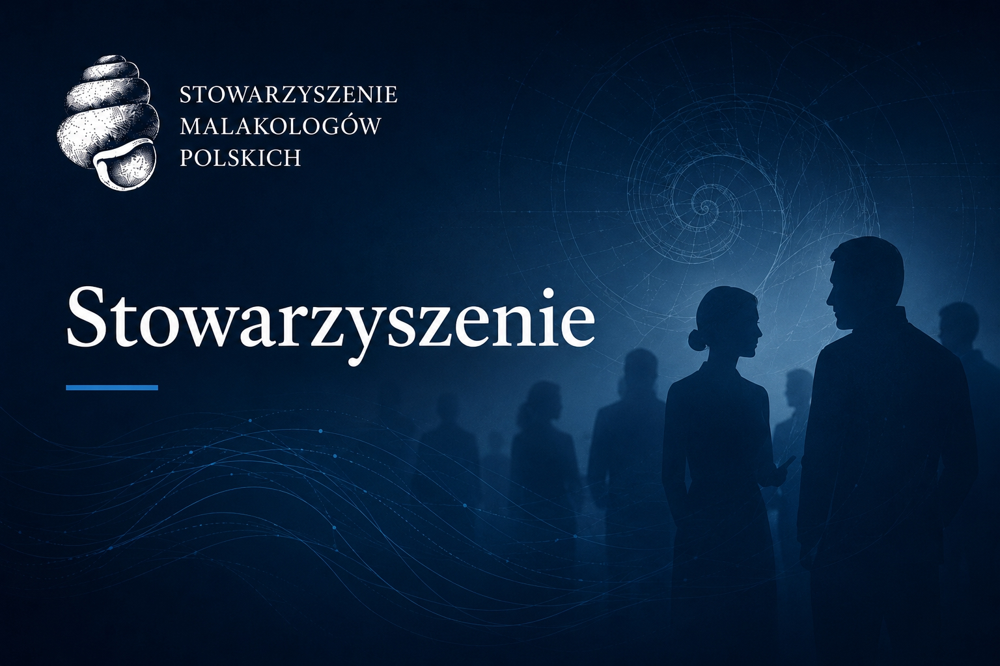
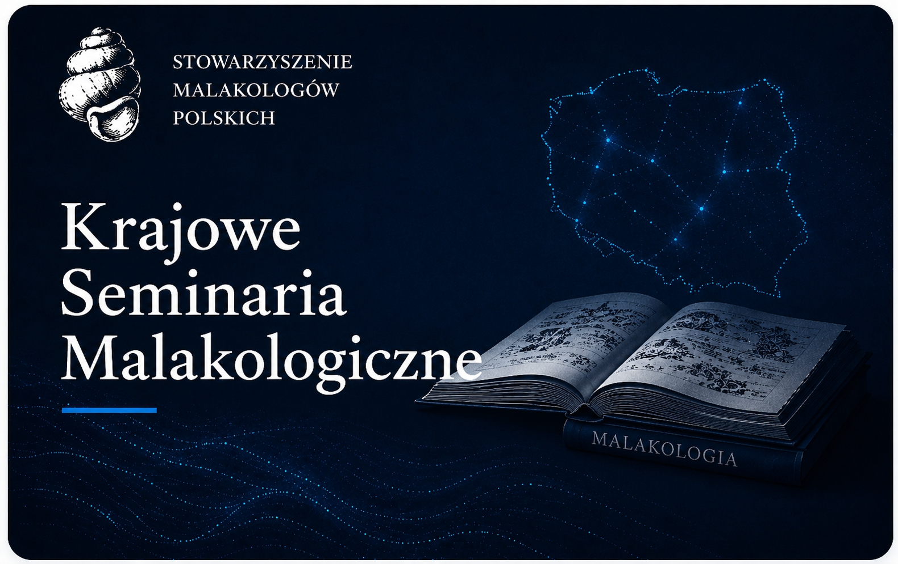
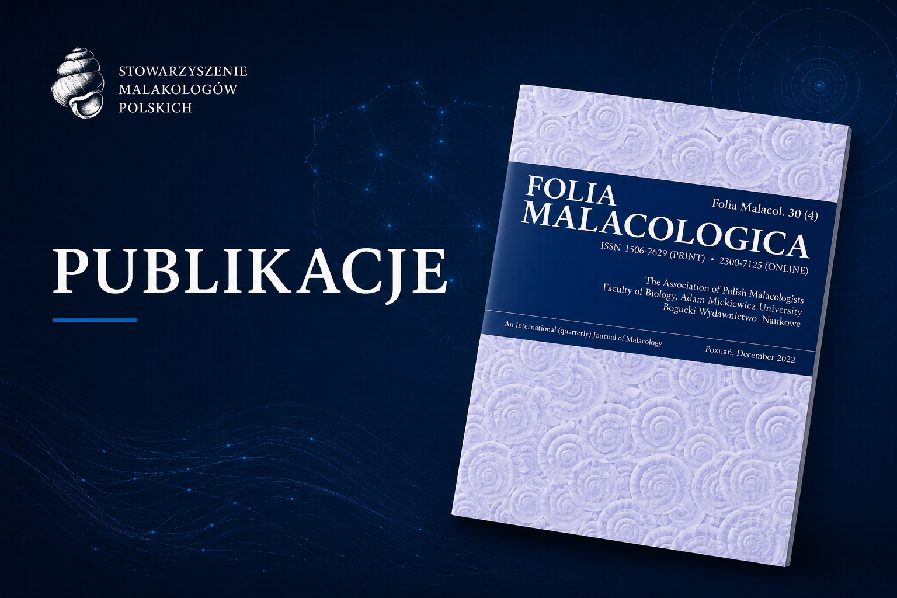
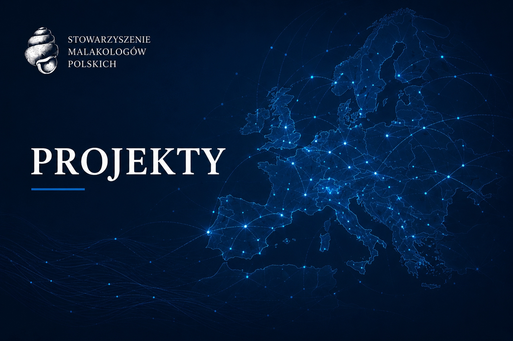
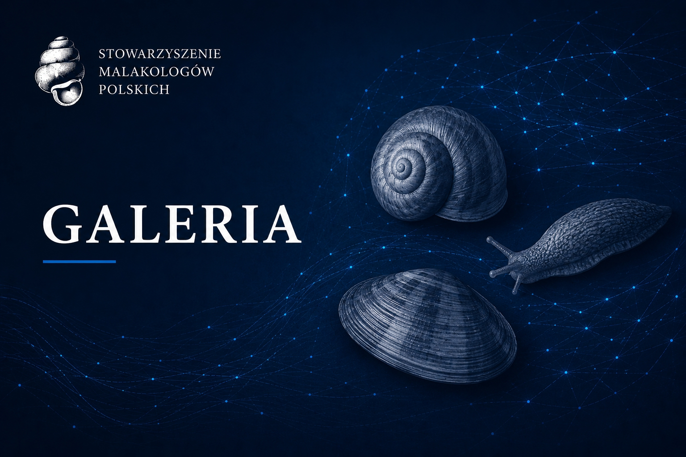
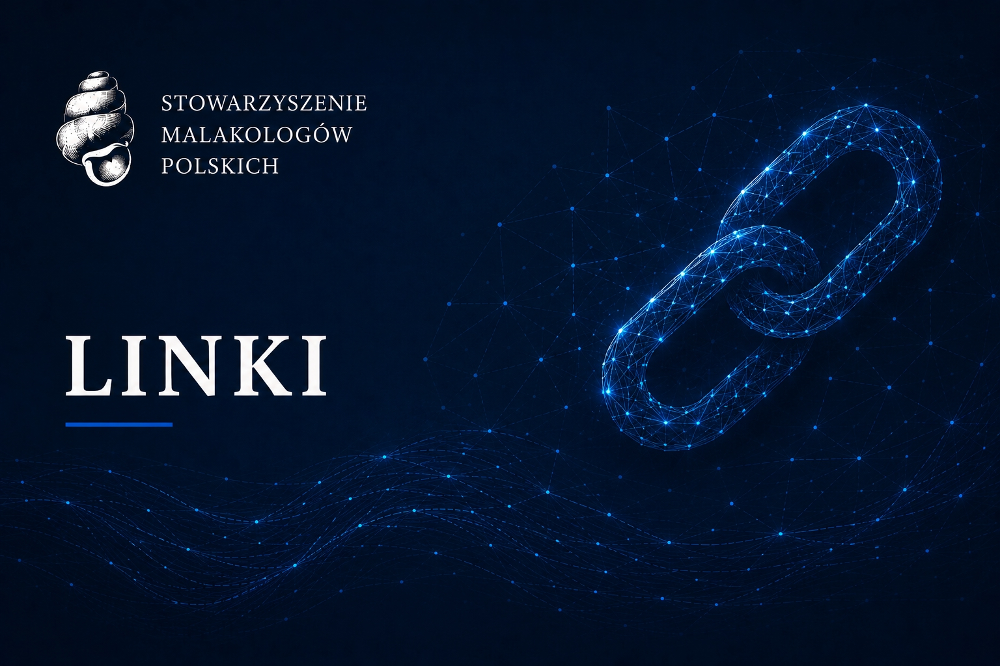
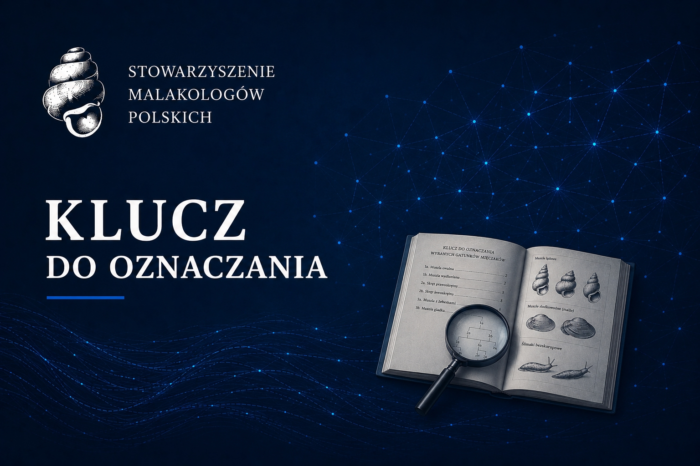

Stowarzyszenie Malakologów Polskich
Stowarzyszenie Malakologów Polskich to ogólnopolskie stowarzyszenie naukowo-zawodowe zrzeszające badaczy oraz pasjonatów mięczaków z Polski i zagranicy... Działamy na rzecz rozwoju malakologii poprzez prowadzenie badań naukowych, popularyzację wiedzy o mięczakach oraz tworzenie przestrzeni współpracy między środowiskami naukowymi, edukacyjnymi i przyrodniczymi.
Naszą misją jest nie tylko wspieranie rozwoju nauki, lecz także ochrona środowiska oraz upowszechnianie wiedzy o roli i znaczeniu mięczaków w ekosystemach. Organizujemy konferencje naukowe, wydajemy publikacje, w tym czasopismo Folia Malacologica, oraz wspieramy rozwój kolejnych pokoleń badaczy.
Łączymy ludzi, wiedzę i pasję, tworząc aktywną i międzynarodową społeczność malakologów.
Aktualności
Odszedł Pan Stanisław Myzyk
Ze smutkiem zawiadamiamy, że odeszł Pan Stanisław Myzyk pozostawiając nas wszystkich z poczuciem ogromnej starty. Badacz polskiej malakofauny oraz pełen pasji popularyzator wiedzy o mięczakach. Na zawsze pozostanie w naszej pamięci. Msza pogrzebowa odbędzie się w dniu 12 mają o godzinie 10.00, w kościele parafialnym w Brusach. O godzinie 9:30 zostanie odmówiony w kaplicy, różaniec w intencji zmarłego.
Zarząd Stowarzyszenia Malakologów Polskich

Nowy Członek Honorowy Stowarzyszenia Malakologów Polskich
Podczas Jubileuszowego XL Krajowego Seminarium Malakologicznego w Krakowie świętowaliśmy przyznanie dr hab. Ewie Stworzewicz, prof. ISEZ PAN tytułu Honorowego Członka Stowarzyszenia Malakologów Polskich.
Obszar zainteresowań Pani Profesor Stworzewicz to ślimaki subfosylne znajdowane w formach krasowych, martwicach wapiennych, kredach jeziornych. Przez wiele lat była też członkiem Redakcji Folia Malacologica, przyczyniając się do rozwoju czasopisma i ugruntowania jego pozycji w świecie naukowym.
Uroczystość odbyła się wśród zbiorów paleontologicznych w Centrum Edukacji Przyrodniczej Uniwersytetu Jagiellońskiego. Laudację na cześć Beneficjentki przygotował i wygłosił Prof. dr hab. Witold Paweł Alexandrowicz

Folia Malacologica włączone do bazy Web of Science
Z ogromną radością zawiadamiamy, że Folia Malacologica, czasopismo wydawane przez Stowarzyszenie Malakologów Polskich, zostało włączone do bazy Web of Science Core Collection (Web of Science in Emerging Sources Citation Index).
Pozwoli to znacząco zwiększyć międzynarodową widoczność publikowanych artykułów i realnie wpłynąć na poziom ich cytowalności. Gorąco zachęcamy do publikowania w Folia Malacologica.
Nowy Członek Honorowy Stowarzyszenia Malakologów Polskich
Z ogromną radością zawiadamiamy, że podczas XXXIX Krajowego Seminarium Malakologicznego, które miało miejsce w Krobi 7-10 maja 2025 roku, odbyło się uroczyste nadanie Panu Profesorowi Robertowi A. D. Cameronowi godności Członka Honorowego Stowarzyszenia Malakologów Polskich w dowód uznania Jego doniosłych osiągnięć w światowej malakologii, jej popularyzacji oraz działalności na rzecz Stowarzyszenia.
Laudację na cześć Beneficjenta przygotowała i wygłosiła dr hab. Małgorzata Ożgo, prof. UKW. Pan Profesor Robert Cameron otrzymał grawerton wraz z dyplomem oraz życzenia i ciepłe słowa wdzięczności za nieocenione zaangażowanie, a szczególnie za niezastąpioną pracę na rzecz czasopisma Folia Malacologica.

Nowy Członek Honorowy Stowarzyszenia Malakologów Polskich
Z ogromną radością zawiadamiamy, że podczas XXXVIII Krajowego Seminarium Malakologicznego, które miało miejsce w Siedlcach 22-25 maja 2024 roku, odbyło się uroczyste nadanie Panu Profesorowi Andrzejowi Lesickiemu (UAM) godności Członka Honorowego Stowarzyszenia Malakologów Polskich w dowód uznania Jego osiągnięć na polu malakologii i jej popularyzacji oraz wieloletniej działalności na rzecz Stowarzyszenia.
Laudację na cześć Beneficjenta, przygotowaną przez profesor Ewę Stworzewicz, odczytał prezes Stowarzyszenia, profesor Marcin Szymanek. Pan Profesor Andrzej Lesicki otrzymał grawerton wraz z dyplomem oraz życzenia i ciepłe słowa wdzięczności za nieocenione zaangażowanie i wieloletnią pracę w Zarządzie SMP, a szczególnie za redagowanie czasopisma Folia Malacologica.







